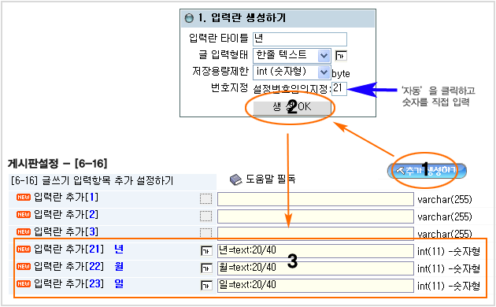

---------------------------------------------------
카렌다, 일정관리 스킨 설치 설명서
----------------------------------------------------
개요
테크노트의 웹보드(게시판) 기능을 이용하여, 카렌다, 일정관리 형태의 입,출력 폼을 구현합니다.
달력 형태로 목록이 출력되며 각각의 날짜에 글을 등록해 넣을 수 있습니다.
견본보기
기본정보
명칭 : TNT CALENDAR V1
용도 : 카렌다, 일정관리
제작 : 테크노트 , http://www.technote.co.kr
배포 : 2008/7/10
사용권 : 프리웨어(무료)
첨부파일
2_index_calendar.php - 카렌타(목록) 출력 스킨
3_body_calendar.php - 본문 출력 스킨
4_write_calendar.php - 글등록폼 스킨
b_img_calendar/*.gif - 이미지폴더/파일
--------------------------------------------------------
설치순서
1, 파일 업로드
....technote/skin_board/a_standard/2_index_calendar.php
....technote/skin_board/a_standard/3_body_calendar.php
....technote/skin_board/a_standard/4_write_calendar.php
....technote/skin_board/a_standard/b_img_calendar/*.gif
'a_standard' 스킨폴더 아닌 다른 스킨폴더에 올려도 됩니다.
주로 사용하는 스킨폴더에 올리세요.
2, 게시판 생성
전체관리자 페이지 (....technote/admin.php) 로 접속해서 새 게시판을 생성합니다.
게시판 이름은 임의로 정해서 생성하면 됩니다.
이하 설명에서는 새로 만든 게시판의 이름을 'mycalendar' 라고 칭합니다.
3, 게시판 설정 --> 스킨지정
'mycalendar' 게시판의 설정페이지를 열고
* [2-2] 글목록 출력 스킨
* [2-3] 본문 출력 스킨
* [2-5] 글쓰기폼 출력 스킨
설정을 위의 '1, 파일업로드 ' 항에서 올린 스킨파일 경로를 선택해 줍니다.
4, 게시판 설정 --> 날짜 입력필드 생성
'mycalendar' 게시판의 설정페이지의 "[6-16] 글쓰기 입력항목 추가 설정하기" 설정에서
* 입력란 추가[21] 년
* 입력란 추가[22] 월
* 입력란 추가[23] 일
세개의 추가 입력란을 생성해 줍니다. 날짜(년,월,일)가 저장될 필드입니다.

5, 글등록 테스트
게시판에 접속(http://....technote/board.php?board=mycalendar) 해서 달력의 날짜를
클릭하고 글등록 합니다.
6, 기타 설정 확인
[2-1] 전체 레이아웃 html 스킨
[3-3] 글 쓰기 권한
[4-20] 메인목록 페이지의 출력요소
[5-20] 본문 페이지의 출력요소 지정
..... 등 필요한 보드설정을 완료합니다.
6, 참고사항
▨ 날짜 입력필드를 다른 필드로 적용하려면?
2_index_calendar.php
3_body_calendar.php
4_write_calendar.php
소스에서 user_add21, user_add22, user_add23 단어를 검색해서 다른 추가 필드명으로 변경하고
위 '4, 게시판 설정 - 날짜 입력필드 생성' 의 설명과 같이 필드를 생성해 주면 됩니다.
▨ 달력 형태로도 출력하고 일반 게시판 목록 형태로도 출력될 수 있게 하려면?
게시판 설정페이지 열고 우측 상단의 '멀티설정' 을 이용하면 됩니다. 멀티설정[2]를 생성해서
일반 게시판 형태의 글목록 스킨으로 따로 적용해 주면 2중 출력 설정이 됩니다.
▨ util_iframe_calendar.php 와 연동하려면?
util_iframe_calendar.php 란 테크노트 원본에 들어 있는 작은 모양의 달력 소스를 말합니다.
달력 사이즈가 작아서 등록 내용을 출력하지 않고 등록내용이 있는 날짜에 동그라미만
표시되는 형태입니다. 그것을 통해 본 스킨으로 생성한 달력을 표시하려면,
해당 파일을 편집기로 열면 년,월,일 이 저장되는 필드명을 지정하는 설정항목이 있습니다.
거기에 user_add21, user_add22, user_add23 을 지정해 주면 됩니다.
▨ 여러개의 카렌타 게시판을 생성하려면?
게시판을 추가 생성하고 본 설명서 그대로 설정을 하면 됩니다.
또는 전체관리자 페이지에서 게시판 복사 기능을 활용해서 동일한 설정의 보드를 바로 생성새도 됩니다.
-------------------------------------------------------------------------------------------------------
기타 내용은 Q&A 게시판 을 이용하시기 바랍니다.